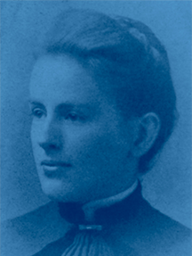
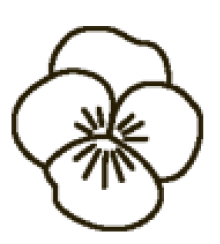

National History
It started with friendship...
Although there were three women's groups represented at Boston University in 1888, seniors Sarah Ida Shaw and Eleanor Dorcas Pond saw a need for a different organization that would "be kind alike to all and think more of the girl's inner self and character than of her personal appearance." Not only did these two young women create the framework of our organization, but they also created its Rituals and symbols, wrote its constitution and designed its emblems. All was finished on Thanksgiving Eve 1888 when the two embraced each other and declared "Tri Delta is founded." Their vision has grown into the dynamic women's organization we know today.
Although there were three women's groups represented at Boston University in 1888, seniors Sarah Ida Shaw and Eleanor Dorcas Pond saw a need for a different organization that would "be kind alike to all and think more of the girl's inner self and character than of her personal appearance." Not only did these two young women create the framework of our organization, but they also created its Rituals and symbols, wrote its constitution and designed its emblems. All was finished on Thanksgiving Eve 1888 when the two embraced each other and declared "Tri Delta is founded." Their vision has grown into the dynamic women's organization we know today.

Chapter History
As one of the world's largest National Panhellenic Conference sororities, Tri Delta is represented in hundreds of collegiate chapters throughout the US. Our Gamma Lambda chapter at UCSD is founded on a platform of leadership, perpetual bonds of friendship, and a womanly character. It is best described by its sisters as a "home away from home," a comfortable place where love, respect, and support can always be found. A recent alumna once said, "Our individual sisters are never defined by our chapter; rather, it is the quality and diversity of our sisters that define us." Our chapter contains women involved in all majors, various campus organizations, as well as representatives of UCSD's Student Councils and Associated Students. We have ladies pursuing careers as future doctors, lawyers, teachers, environmental and social advocates, conservationists, political leaders, and so much more. With an Officer's Council of over 20 sisters, our chapter provides many opportunities for leadership positions and involvement, helping our women grow and become strong leaders in their workplace and communities.
Symbols & Emblems

The pansy is Tri Delta's flower. It is also a symbol of alumnae membership and the third step in the lifetime development of Delta Delta Delta's members.
The pansy is Tri Delta's flower. It is also a symbol of alumnae membership and the third step in the lifetime development of Delta Delta Delta's members.
The pansy is Tri Delta's flower. It is also a symbol of alumnae membership and the third step in the lifetime development of Delta Delta Delta's members.